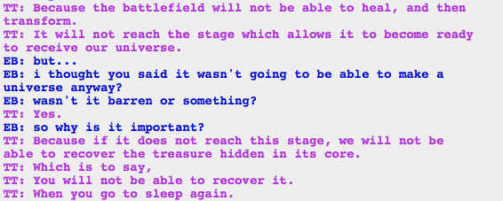

Rose, on why John should absolutely not let Rose’s kernelsprite go unprototyped.
TREASURE AT THE CORE OF THE BATTLEFIELD! Well, that makes sense, right? After all, they have to be fighting over something. (Literally over, perhaps?)
I suspect that the kernelsprite is going to go unprototyped. somehow.